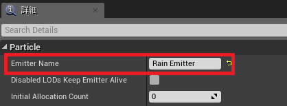
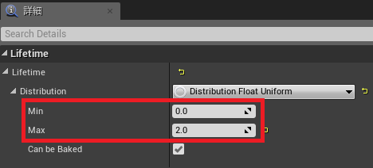

Unrealで雨が降った後に波紋を出す
ゲームエンジンを使って雨を降らせるというのを行いたいと思い、google先生で調べたところ おもちゃラボさんの【Unity】広重のような雨のエフェクトを作るが見つかり、雨の感じが自分好みだった。
このような雨の降らせ方をUnrealでもできないかと、素人ながらに試行錯誤し、それらしく作れたのでその時の手順をメモした。
環境
- Unreal Engin: v4.23.1
手順
プロジェクトの作成
とりあえず、プロジェクトを作成。
プロジェクト名は、Rain_Projectとする。
床の設定
デフォルトの床のマテリアルを変更する。
Floorを選択し、マテリアルはM_Floor_01にする。
雨マテリアルを作成
テクスチャはこのような感じを作成。
名前は、とりあえずT_Rainという名前を付けて、Unrealにインポート。
次に雨のマテリアルを作成する。
マテリアルの名前は、M_Rainとした。
M_Rainを開くと、メインマテリアルが１つある状態となっている。
メインマテリアルの設定を変更する。
詳細タブにある
- Material -> Blend Mode
のOpacueをTranslucentに変更。
メインマテリアルの詳細に関する設定はこれで終了。
次に、T_Rainをマテリアルに適用するためTexture Sampleノードを追加。
Texture SampleノードにT_Rainを適用する。
Texutre Sampleノードの詳細タブにあるMaterial Expression Texture BaseのTextureの項目でT_Rainを設定する。
これでTexture Sampleノードの詳細に関する設定は終了。
次にノードを繋げていく。
Texture SampleノードのRGB-> メインマテリアルのエミッシブルカラーTexture SampleノードのA-> メインマテリアルのオパシティ
それぞれに接続する。

波紋マテリアルを作成
波紋のテクスチャを用意。
テクスチャ名は、とりあえずT_Reppleという名前にした。
波紋のマテリアルを作成する。
マテリアルの名前は、M_Reppleにした。
エミッシブルカラーはTexture Sampleとメインマテリアルをそのまま繋ぐが、オパシティは Texture Sample と Particle Color を合わせて使用する。
Texture SampleノードのTextureの項目は、T_Reppleを設定オパシティをパーティクル側で調整出来るようにする。Particle Colorを追加Multiplyを追加Texture SampleのAとParticle Colorの白をMultipleのAとBに繋げる。
２つはA,Bどちらにつないでも問題ない。Multiplyの出力をメインのオパシティに繋げる。
以下がその完成系。
雨を降らせる
雨と波紋それぞれのマテリアルを用意できたので、実際に雨を降らせる。
まず、パーティクルを作成する。
パーティクルの名前は、Rain_Systemという名前を付けた。
作成したRain_Systemを開くと次のような画面がでてくる。
RequiredやSpawnというモジュールがあるが、初期のモジュールでは必要なものが無かったり、使わないモジュールがあったりしており、またそれぞれのモジュールの設定などもあるので、なるべく簡潔に説明する。
まず、使ったモジュールは以下である。
番号順に説明する。
- ここでは、エミッタの名前を変更する。
Rain Emitterという名前にする。
 Requiredモジュール。
マテリアルを設定する。M_Rainを設定。
Spawnモジュール。
発生させるパーティクルの数を設定する。数は、5000にする。
Event Generatorモジュール。
パーティクル衝突時に、イベントを生成するようにする。
このモジュールは、この後説明する波紋を表示のために必要になってくる。- 最初に
+ボタンでイベントを1つ追加する。 Typeをコリジョンに設定する。 イベントの発生条件を床と雨が衝突したときにイベントを発生させるため。CustomNameをonKilledRainと入力。
通知するイベント名は、まぁ雨がkillした後のイベントということで。
- 最初に
Lifetimeモジュール。
雨のライフタイムを設定。minは0.0を設定maxは0.3を設定
Initial Sizeモジュール。
特に何もしない。Initial Locationモジュール。
雨を降らせる範囲を設定。DistributionはDistribution Vector Uniformにする。maxは、x=500, y=500, z=500を設定minは、x=-500, y=-500, z=-0.1を設定
Const Accelerationモジュール。
雨が降る速度を変更。
パーティクルを下に移動させるため、マイナスの数字を入力する。zに-5000を入力。
Actor Collisionモジュール。
これは特になにもしない。Lock Axisモジュール。これを設定しないと、カメラの向きを変えたときなど雨の降り方がおかしなことになる。
Lock Axis Flagsの設定をRotate Zを指定する。
ここで、一旦設定したパーティクルRain_Systemをビューポートに設置する。
Rain_Systemの位置は、xyzともに 0 にした。次の図のように雨が降ってくるようになった。
波紋を表示
波紋の表示のタイミングは、雨が降る -> 床に当たる -> 波紋を表示、というふうにしたい。
エミッタは左から右に実行されるので、Rain Emitterの右側に波紋用のエミッタを作成する。
波紋を表示させるために、使ったモジュールは以下である。
番号順に説明する。
Requiredモジュール。
ここでは、マテリアルをM_Reppleに変更する。
Spawnモジュール。
このモジュールで、波紋をスポーンしない。なので、数は0にする。
EventReceiver Spawnモジュール。
雨のEvent Generatorモジュールが発行したイベントを受け取り、パーティクルをスポーンする。Constantに１を設定。
なぜ1かというと、雨1粒につき波紋を1つだけスポーンさせたいためSource
ここでは、上記の雨で設定したEvent Generatorモジュールの値と同じものを入力する。Event Generator Typeは、コリジョンを設定Event Nameは、onKilledRainを入力
Lifetimeモジュール
波紋のライフタイムを設定。minは0.0を設定maxは2.0を設定

Initial Locationモジュール
波紋を表示させる位置について、XYについて設定はしない。
ただし、Zが0のままでは、床の上部分と座標が被り波紋の線がはっきりとしない。
波紋を表示させる高さを変える。一応床より少し上にする。
MaxとMinのZに0.01を入力。
Initial Sizeモジュール
特に何もしない。Color Over Lifeモジュール
徐々に波紋が消えるように色を設定する。
基本、追加時の初期設定で徐々に消えるようになっているので、特に何もしない。Size By Lifeモジュール。
波紋が徐々に広がるようにするために使用。
Points->0->Out ValのX,Y,Zに0を入力。
Lock Axisモジュール
これを設定しないと、波紋が縦に表示される。
なので、Lock Axis FlagsをZにする。
すべての設定は完了したので、ビューポートで確認。